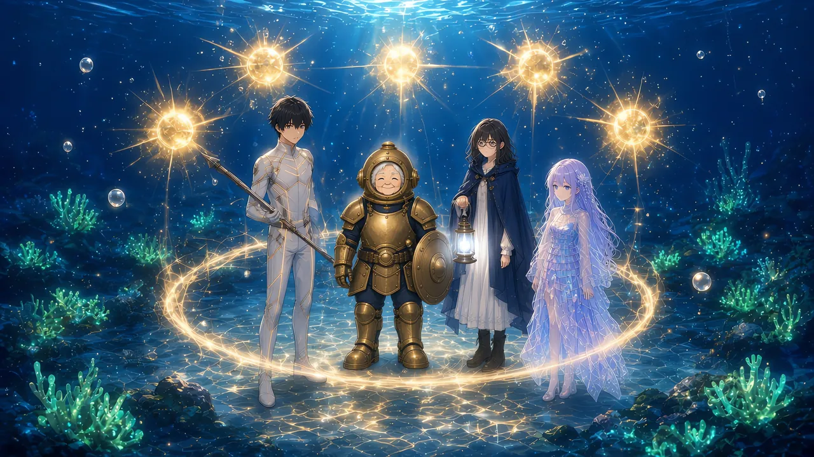

ノアは、あの夜の問いに答えなかった。
「さあ。この海、ときどき変なんだよ」
そう笑って、いつもどおり3時40分ちょうどに落ちていった。
だから僕は、問いを泡に包んで、メモ帳の丸の一つにした。○ ノアのFRG、89。割れていないのに。
そして、さらに下へ潜った。
【深度 -2,000m】
＊
群青は、もう夜の色に近かった。
頭上の真珠白は、とうに見えない。光珊瑚の翠だけが、岩壁のところどころで、灯籠のように灯っている。
この深さの魚は、硬く、重かった。銛が通るたびに、数字の泡が大きくふくらむ。
一晩目は、灯台のまわりで、光る烏賊を追った。烏賊は左に逃げる。メモ帳の丸のとおりだった。
二晩目は、千歳さんの盾の陰から、岩に擬態した蟹を突いた。殻の継ぎ目にだけ、数字が深く入る。
三晩目は、ウタの歌の拍子で突いた。拍の頭で突くと、泡が一回り大きく弾ける。気のせいかもしれない。けれど、気のせいだとしても、気持ちのいい気のせいだった。
その夜の終わりに、ファンファーレが鳴った。
【LEVEL UP!】×5 Lv 16 → Lv 21
PRS 170 → 220 FRG 20 → 21
五つの金色が、深い群青の中で、星みたいに弾けた。
「また五つ」
ウタが、指を折って数えた。
「ルカ、二十一」
「二十一だね」
二十一。灯台で初めて会った夜のノアの、三分の一にも届かない。千歳さんの、五分の一と少し。
それでも、数字は確かに積もっていた。
＊
「ここから先は、あたしのそばを離れるんじゃないよ」
深度2,500mを過ぎたあたりで、千歳さんが言った。
千歳さんの鎧から、淡い光の輪がひろがっている。潜騎士の水圧分担。輪の内側にいる仲間の泡殻を、千歳さんの泡殻が外から支える。
【深度 -2,500m】
【要求PRS 250／現在 220（不足 30）】
【圧損 −15／分】
足りないぶんの、半分ずつ。式は、もう体が覚えていた。
この深さなら、まだ一人でも潜れる。輪の外でも、削られるだけで済む。
なのに、千歳さんは僕を輪の中に置いた。
僕は、頭の中で線を引いた。
自分のPRSの二割に、10を足す。220の二割は44。足して、54。足りないぶんが54を超えたら、泡殻は削られるのではなく、潰れる。
要求が274。深度にして、2,740m。
そこが、今の僕の底だ。
輪の中で、深度計の数字が増えていく。2,600。2,700。2,740を越えた瞬間も、泡殻は鳴らなかった。千歳さんが、外から支えている。
【深度 -2,900m】
【圧損 −35／分】
「どうしてですか、って顔をしてるね」
千歳さんが、兜の奥で笑った。
「やってみな。ちょっとだけ」
光の輪の縁から、僕は一歩だけ外へ出た。
泡殻が、悲鳴をあげた。
きしむのではない。押しつぶされる。膜が内側へたわみ、虹色の干渉が、ぎゅっと一点に寄せられていく。
【警告：圧壊ライン超過】
【要求PRS 290／現在 220（不足 70／圧壊ライン 54）】
HPのゲージが、目に見えて縮んでいく。一分ごとではない。一秒ごとに。
「戻りな」
千歳さんの手が、僕の腕をつかんで、輪の中へ引き戻した。
泡殻が、ふっと元の形に戻った。
【水圧分担：千歳】
【圧損 −35／分】
HPは、まだ減っている。不足は70のまま、一分に35ずつ。けれど、潰れはしない。
「分かったかい」
「……分かりました」
足りないぶんが少しなら、痛いだけで済む。足りなさすぎると、泡は形を保てない。その境目が、圧壊ライン。
PRSが大きいほど、許される不足も大きくなる。弱いうちは、ほんの少しの不足でも潰れる。
よくできた線だと思った。そして、ひどく正直な線だとも。
「あたしの輪の中なら、要求が1,100まではもつ。あたしのPRSが1,100だからね」
「千歳さんは、それ以上は」
「行けないよ」
千歳さんは、あっさりと言った。
「Lv99でも、PRSは1,100が上限さ。海の底より深くは、誰も潜れないようにできてる」
現実の海でいちばん深い場所が、一万一千メートル。
この海の水圧は、本物の海と、同じ形をしているのだ。
＊
岩棚で、少し休んだ。
千歳さんは、珍しく兜の窓を少しあけて、群青の向こうを眺めていた。
「千歳さんは、現実でも、潜ってるんですか」
「潜ってるよ。房総の海でね。今も現役の海女さ」
「海女」
「七十四になっても、まだ潜ってる。体じゃ、もう二十メートルがせいぜいだけどね」
千歳さんは、窓の向こうで笑った。
「ここなら、体じゃ行けない深さまで行ける。それが、うれしくてね」
「現実の海は、どうやって潜るんですか。機械とか」
「機械は持たないよ。何ひとつ」
ウタが、千歳さんの膝に寄ってきた。
「本物の海って、どんな色？」
「朝は、銀色。昼は、緑。夕方になると、金色が一枚かぶさる」
千歳さんは、指で水をなでるようにした。
「それから、冷たい。ここの海より、ずっと冷たいよ。冷たくて、しょっぱくて、ちゃんと痛い」
「痛いの、いいこと？」
「いいことさ。生きてるうちは、海は痛いもんだよ」
ウタは、自分の指先を見た。透きとおった指先には、冷たさも痛みもない。それでも、何かを確かめるように、きゅっと握った。
何でもないことのように、千歳さんは言った。
「時計も、電話も。身につけるのは、磯着と、眼鏡と、腰の鉤だけ」
「どうしてですか」
「さあねえ。昔からそうしてるから、っていうのもあるけど」
千歳さんは、少し考えるように首をかしげた。
「機械を持ってると、海に名前を呼ばれる気がしてね。持ってなければ、海はあたしを、ただの生きもんとして通してくれる」
名前を呼ばれる。
頭上の【？？？】が、少しだけ重くなった気がした。
＊
「そうだ。あんたに、一つ教えとこう」
千歳さんは、唇をすぼめた。
ひゅう、と、細く高い音が鳴った。
口笛とは違う。息を長く吐ききったあとの、喉の奥から抜けるような、かすれた音。群青の中を、まっすぐ遠くまで渡っていく。
「磯笛さ。海女が水から上がったとき、吸う前に、こうやって吐くんだ。胸の中の古い息を、ぜんぶ」
「どうやるんですか」
「唇を細くして、肺の底から。……違う違う、口笛になってる」
ひゅ、と僕の音は途中で切れた。もう一度。ひゅう、と、少しだけ長く。
「そうそう。それが、生きて上がってきたって合図になる」
ウタが、目を輝かせて真似をした。
ウタの磯笛は、旋律になった。六つの音の、最初の一つ。

「ウタちゃんのは、歌になっちまうね」
千歳さんは、笑った。
＊
ステータスを見せてもらった。
【千歳 Lv 99 潜騎士】
【HP 9,999／9,999 MAX★】
【PRS 1,100 MAX★】
小さな星の印が、二つの数字の横で光っていた。
「これは」
「上限さ。それ以上は、表示できないって印」
「本当は、もっとあるんですか」
「さあね。数えてくれるもんがいないからね」
千歳さんは、あっけらかんと笑った。
「9,999で止まってるだけさ。止まってるって、ちゃんと書いてあるだろう。正直なもんだよ」
正直な数字。
上限で止まっていることを、隠さない表示。僕なら、たぶんそう作る。止まっていることまで含めて、数字は本当のことを言うべきだから。
「ねえ、ルカ」
千歳さんは、兜の窓を閉めた。
「もし、本物の海で何かあったら、あたしが行くよ」
「本物の海で、って」
「言ってみただけさ。年寄りは、言ってみたくなるんだよ」
冗談のような声だった。けれど、兜の奥の目は、笑っていなかった気がする。
＊
深度計は、-2,900mのまま止まっていた。
あと100m。そこから先が、沈都層だと灯台で聞いた。
僕たちは、千歳さんの輪の中で、さらに下を見た。
岩棚の縁から、群青の闇が、まっすぐ下へ落ちていく。
その底に、何かがあった。
光だった。
一つではない。何十、何百、何千。小さな、四角い、琥珀色の光。規則正しく並んで、ところどころが欠けている。
窓だ、と思った。
夜の街を、高いところから見下ろしたときの、あの光り方。
足元のはるか下に、何千もの窓が灯る“街”の光が見えた。